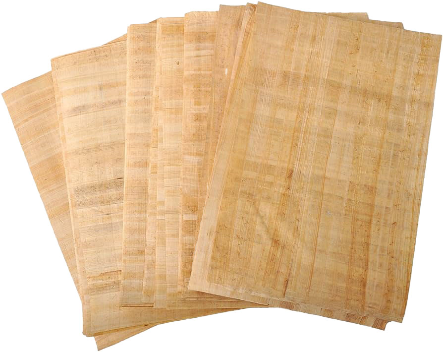
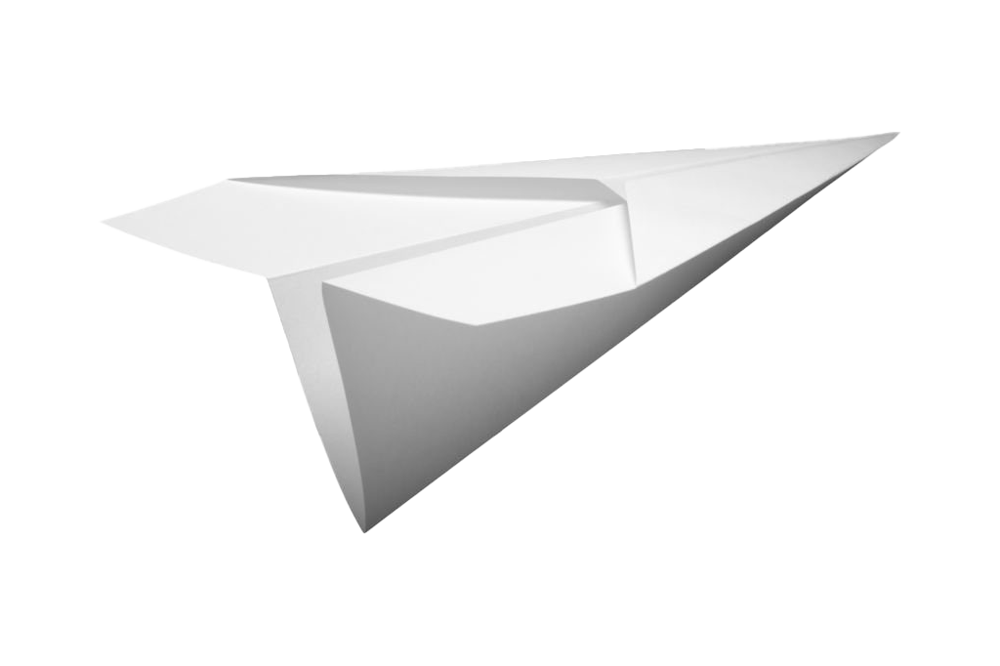

Introduction to paper
For more information you can visit the
Wikipedia
You will start by turning the raw material into pulp which then be refined by placing the pulp in a mechnical mechine which uses rotating discs or bars. By refining the pulp, it helps to give the paper better characteristics such as fiber length, strength, and flexibility. Once refining is done, it will be put into a mesh to let the water drain off so that the fibers can bind together into a wet slab of paper which will be presed and dired and produce the paper that we use.
Some ways we use paper is to make paper aeroplanes from them
We also use some other things to write on like sand
We even use other materials for paper such as stone